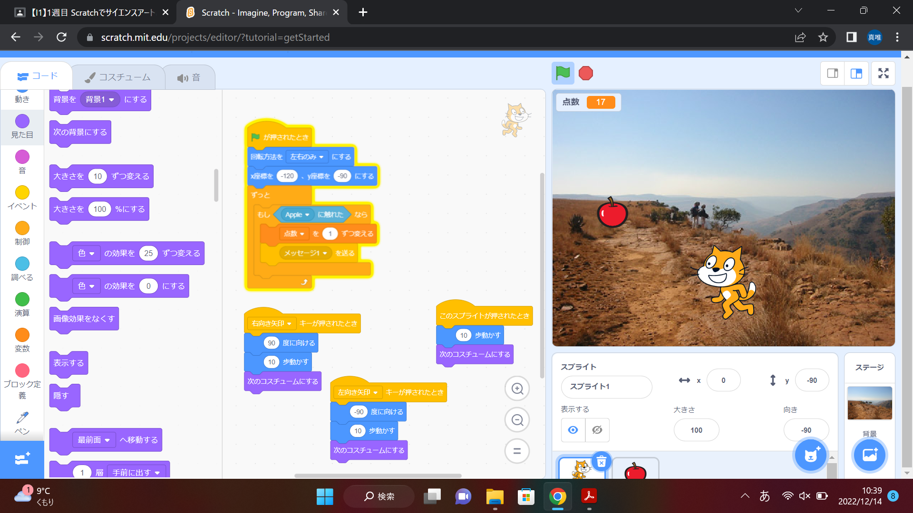

1週目のレポート ： 公大高専１年実習I-1
2B班26番 nago
第1週目
1-1 サイエンスアート
1.内容
Scratchのソフトを使って、アートの作成を行った。このソフトには、画面上に表示されているキャラクターを隣に表示された多くの選択肢を利用し、組み合わせることで、自分の思った動作をさせることができる。また、このアートの動作に関しては、主に、「動き」「イベント」「制御」や、項目の一番下にある自分が追加したいものを選択できるボタンを押して選ぶことで表示されるようになる「ペン」の項目から選ぶもので成り立っており、一週目の授業では、それらを使ってキャラクターを移動させてアートを作った。 2.感想
このソフトは中学校の頃に授業で使ったことがあったが、絵が描けるなんて知らなかったし、下の項目の追加ボタンを押したとき、進んだ先に項目がたくさんあるのをみて、本当にプログラミングって幅広いんだなと思った。また、アートを作るとき、意外と自分の思い描いた絵が描くのが難しかった。こういうのも慣れて、自分の思い通りに描けるようになりたいと思った。
1-2 ゲーム

1.内容
ゲームを作成するものも、アートを作ったものと同じような仕組みで、もともとあったキャラクターに落ちてくるリンゴを拾わせるゲームを作った。これは、横にある様々な項目でまず、どのように猫が移動するのかや点数の加え方のプログラムを作った。
2.感想
こんなに単純なゲームを作るためにこんなに多くのプログラムが必要だと知って、今まで楽しんでいたゲームがどれだけ作るのが大変なのかを実感した。
1-3 ホームページ作成
私のホームページ
1.内容
まず、ホームページを作るアプリでサインインし、自分のアカウントを作り、用意されていたプログラムに沿って自分の書きたい内容を入れていった。そして、保存したら、自分の作ったもののURLを入力し、確認した。
2.感想
ホームページなどってドキュメントなどを書いてそこからインターネットに何らかの方法で添付して成り立っているのかなと思っていたけれど、こんな風に一個一個文字を打って作成されているのを知ってすごいと思った。